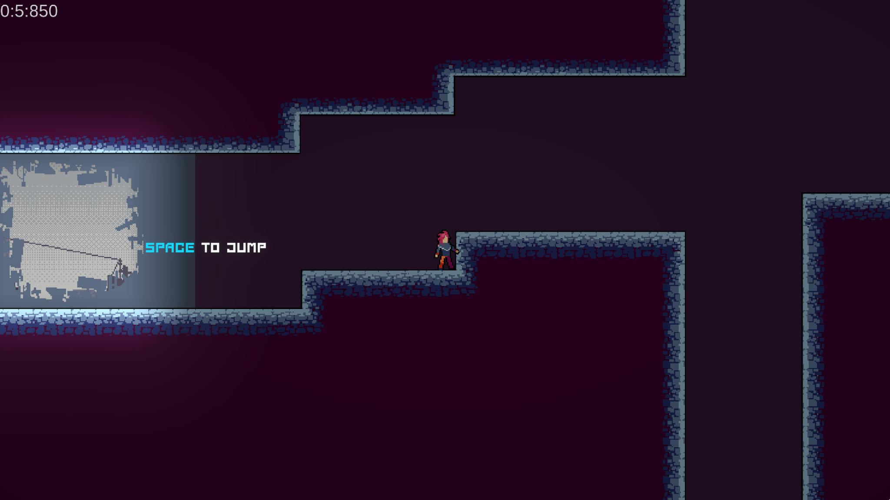
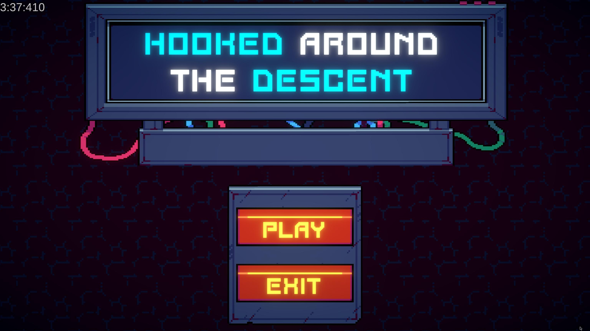

{% extends "projects/base.html" %}
{% block head %}
	{{ super() }}
	<link rel="stylesheet" href="./index.css">
{% endblock %}
{% block page_content %}
	{{ super() }}
	<h2>Features</h2>
	<ul>
		<li>Run timer</li>
		<li>Early reset using R</li>
	</ul>
	<h2>Gallery</h2>
	
	
{% endblock %}
